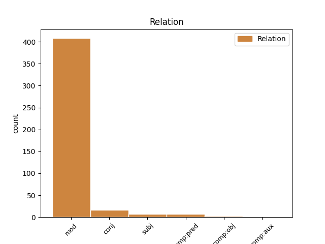
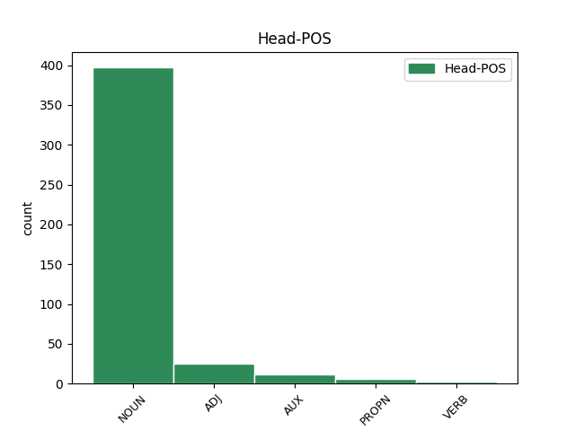
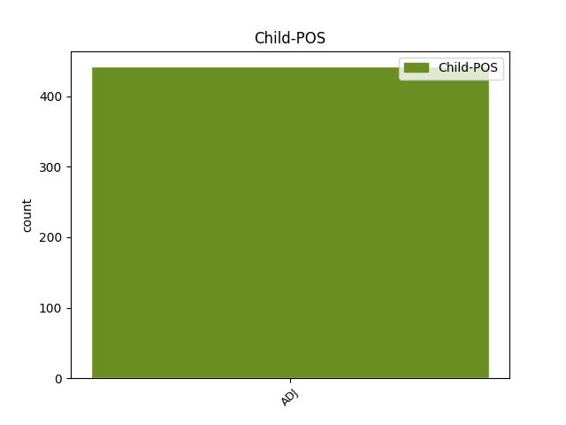

Distribution of features within this leaf



Agreement Rules sorted by frequency.
- When the dependent token is the modifer(mod) of the head token, and the head token is NOUN and the dependent token is ADJ.
1 Ён _ _ _ _ 0 _ _ _
2 прыставаў _ _ _ _ 0 _ _ _
3 да _ _ _ _ 0 _ _ _
4 свайго _ _ _ _ 0 _ _ _
5 даўганогага _ _ _ _ 0 _ _ _
6 дзядзькі _ _ _ _ 0 _ _ _
7 Жырафа _ _ _ _ 0 _ _ _
8 і _ _ _ _ 0 _ _ _
9 пытаўся _ _ _ _ 0 _ _ _
10 , _ _ _ _ 0 _ _ _
11 чаму _ _ _ _ 0 _ _ _
12 ў _ _ _ _ 0 _ _ _
13 яго _ _ _ _ 0 _ _ _
14 на _ _ _ _ 0 _ _ _
15 скуры _ _ _ _ 0 _ _ _
16 плямы _ _ _ _ 0 _ _ _
17 , _ _ _ _ 0 _ _ _
18 і _ _ _ _ 0 _ _ _
19 высачэзны _ _ _ _ 0 _ _ _
20 дзядзька _ _ _ _ 0 _ _ _
21 Жыраф _ _ _ _ 0 _ _ _
22 даваў _ _ _ _ 0 _ _ _
23 яму _ _ _ _ 0 _ _ _
24 за _ _ _ _ 0 _ _ _
25 гэта _ _ _ _ 0 _ _ _
26 грымака _ _ _ _ 0 _ _ _
27 сваім _ _ _ _ 0 _ _ _
28 цвёрдым цвёрды ADJ DT Animacy=Inan|Case=Ins|Degree=Pos|Gender=Masc|Number=Sing 33 mod _ SpaceAfter=No
29 , _ _ _ _ 0 _ _ _
30 як _ _ _ _ 0 _ _ _
31 камень _ _ _ _ 0 _ _ _
32 , _ _ _ _ 0 _ _ _
33 капытом капыт NOUN NN Animacy=Inan|Case=Ins|Gender=Masc|Number=Sing 0 _ _ _
34 . _ _ _ _ 0 _ _ _
1 І _ _ _ _ 0 _ _ _
2 раптам _ _ _ _ 0 _ _ _
3 выбухнула _ _ _ _ 0 _ _ _
4 зялёным _ _ _ _ 0 _ _ _
5 і _ _ _ _ 0 _ _ _
6 пунсовым _ _ _ _ 0 _ _ _
7 полымем _ _ _ _ 0 _ _ _
8 , _ _ _ _ 0 _ _ _
9 зь _ _ _ _ 0 _ _ _
10 якога _ _ _ _ 0 _ _ _
11 вылецеў _ _ _ _ 0 _ _ _
12 чырвона-залаты _ _ _ _ 0 _ _ _
13 цмок _ _ _ _ 0 _ _ _
14 , _ _ _ _ 0 _ _ _
15 троху _ _ _ _ 0 _ _ _
16 меншы малы ADJ NN Animacy=Anim|Case=Nom|Degree=Cmp|Gender=Masc|Number=Sing 0 _ _ _
17 за _ _ _ _ 0 _ _ _
18 сапраўднага _ _ _ _ 0 _ _ _
19 , _ _ _ _ 0 _ _ _
20 але _ _ _ _ 0 _ _ _
21 ж _ _ _ _ 0 _ _ _
22 насамрэч _ _ _ _ 0 _ _ _
23 жахлівы жахлівы ADJ NN Animacy=Anim|Case=Nom|Degree=Pos|Gender=Masc|Number=Sing 16 conj _ SpaceAfter=No
24 . _ _ _ _ 0 _ _ _
1 Самая самы ADJ _ Case=Nom|Degree=Pos|Gender=Fem|Number=Sing 2 mod _ _
2 прыгожая прыгожы ADJ _ Case=Nom|Degree=Pos|Gender=Fem|Number=Sing 0 _ _ _
3 студэнтка _ _ _ _ 0 _ _ _
4 вучыцца _ _ _ _ 0 _ _ _
5 ў _ _ _ _ 0 _ _ _
6 Віцебску _ _ _ _ 0 _ _ _
1 Пэўны _ _ _ _ 0 _ _ _
2 час _ _ _ _ 0 _ _ _
3 таму _ _ _ _ 0 _ _ _
4 ў _ _ _ _ 0 _ _ _
5 галоўным _ _ _ _ 0 _ _ _
6 медыцынскiм _ _ _ _ 0 _ _ _
7 ведамстве _ _ _ _ 0 _ _ _
8 спрабавалi _ _ _ _ 0 _ _ _
9 скласцi _ _ _ _ 0 _ _ _
10 прыблiзны _ _ _ _ 0 _ _ _
11 " _ _ _ _ 0 _ _ _
12 сцэнарый _ _ _ _ 0 _ _ _
13 " _ _ _ _ 0 _ _ _
14 на _ _ _ _ 0 _ _ _
15 блiжэйшыя _ _ _ _ 0 _ _ _
16 5 _ _ _ _ 0 _ _ _
17 - _ _ _ _ 0 _ _ _
18 6 _ _ _ _ 0 _ _ _
19 гадоў _ _ _ _ 0 _ _ _
20 : _ _ _ _ 0 _ _ _
21 з _ _ _ _ 0 _ _ _
22 улiкам _ _ _ _ 0 _ _ _
23 аб'ёмаў _ _ _ _ 0 _ _ _
24 падрыхтоўкi _ _ _ _ 0 _ _ _
25 спецыялiстаў _ _ _ _ 0 _ _ _
26 у _ _ _ _ 0 _ _ _
27 медыцынскiх медыцынскi ADJ NN Animacy=Inan|Case=Loc|Gender=Masc|Number=Plur 28 mod _ _
28 ВНУ ВНУ PROPN _ Animacy=Inan|Case=Loc|Gender=Masc|Number=Plur 0 _ _ _
29 , _ _ _ _ 0 _ _ _
30 дэмаграфiчных _ _ _ _ 0 _ _ _
31 тэндэнцый _ _ _ _ 0 _ _ _
32 і _ _ _ _ 0 _ _ _
33 многiх _ _ _ _ 0 _ _ _
34 iншых _ _ _ _ 0 _ _ _
35 акалiчнасцяў _ _ _ _ 0 _ _ _
36 атрымлiвалася _ _ _ _ 0 _ _ _
37 , _ _ _ _ 0 _ _ _
38 што _ _ _ _ 0 _ _ _
39 патрэбы _ _ _ _ 0 _ _ _
40 айчыннай _ _ _ _ 0 _ _ _
41 сiстэмы _ _ _ _ 0 _ _ _
42 аховы _ _ _ _ 0 _ _ _
43 здароўя _ _ _ _ 0 _ _ _
44 ва _ _ _ _ 0 _ _ _
45 ўрачэбных _ _ _ _ 0 _ _ _
46 кадрах _ _ _ _ 0 _ _ _
47 могуць _ _ _ _ 0 _ _ _
48 быць _ _ _ _ 0 _ _ _
49 задаволеныя _ _ _ _ 0 _ _ _
50 да _ _ _ _ 0 _ _ _
51 2014 _ _ _ _ 0 _ _ _
52 года _ _ _ _ 0 _ _ _
53 . _ _ _ _ 0 _ _ _
1 У _ _ _ _ 0 _ _ _
2 інтэлектуальным _ _ _ _ 0 _ _ _
3 конкурсе _ _ _ _ 0 _ _ _
4 , _ _ _ _ 0 _ _ _
5 які _ _ _ _ 0 _ _ _
6 праходзіў _ _ _ _ 0 _ _ _
7 ў _ _ _ _ 0 _ _ _
8 фармаце _ _ _ _ 0 _ _ _
9 бліц-інтэрв’ю _ _ _ _ 0 _ _ _
10 , _ _ _ _ 0 _ _ _
11 кожная кожны ADJ _ Case=Nom|Degree=Pos|Gender=Fem|Number=Sing 15 subj _ _
12 з _ _ _ _ 0 _ _ _
13 дзяўчат _ _ _ _ 0 _ _ _
14 павінна _ _ _ _ 0 _ _ _
15 была быць AUX _ Aspect=Imp|Gender=Fem|Mood=Ind|Number=Sing|Tense=Past|VerbForm=Fin|Voice=Act 0 _ _ _
16 расказаць _ _ _ _ 0 _ _ _
17 , _ _ _ _ 0 _ _ _
18 якімі _ _ _ _ 0 _ _ _
19 яна _ _ _ _ 0 _ _ _
20 бачыць _ _ _ _ 0 _ _ _
21 навуковыя _ _ _ _ 0 _ _ _
22 дасягненні _ _ _ _ 0 _ _ _
23 Беларусі _ _ _ _ 0 _ _ _
24 ў _ _ _ _ 0 _ _ _
25 3017 _ _ _ _ 0 _ _ _
26 годзе _ _ _ _ 0 _ _ _
27 . _ _ _ _ 0 _ _ _
1 Але _ _ _ _ 0 _ _ _
2 вось _ _ _ _ 0 _ _ _
3 у _ _ _ _ 0 _ _ _
4 той _ _ _ _ 0 _ _ _
5 самы _ _ _ _ 0 _ _ _
6 час _ _ _ _ 0 _ _ _
7 , _ _ _ _ 0 _ _ _
8 даўным-даўно _ _ _ _ 0 _ _ _
9 , _ _ _ _ 0 _ _ _
10 жыў _ _ _ _ 0 _ _ _
11 адзін _ _ _ _ 0 _ _ _
12 такі _ _ _ _ 0 _ _ _
13 Слон _ _ _ _ 0 _ _ _
14 , _ _ _ _ 0 _ _ _
15 або _ _ _ _ 0 _ _ _
16 , _ _ _ _ 0 _ _ _
17 лепш _ _ _ _ 0 _ _ _
18 сказаць _ _ _ _ 0 _ _ _
19 , _ _ _ _ 0 _ _ _
20 Слонік _ _ _ _ 0 _ _ _
21 , _ _ _ _ 0 _ _ _
22 які _ _ _ _ 0 _ _ _
23 быў быць AUX _ Aspect=Imp|Gender=Masc|Mood=Ind|Number=Sing|Tense=Past|VerbForm=Fin|Voice=Act 0 _ _ _
24 страшэнна _ _ _ _ 0 _ _ _
25 дапытлівы дапытлівы ADJ _ Case=Nom|Degree=Pos|Gender=Masc|Number=Sing 23 comp:pred _ SpaceAfter=No
26 , _ _ _ _ 0 _ _ _
27 і _ _ _ _ 0 _ _ _
28 каго _ _ _ _ 0 _ _ _
29 , _ _ _ _ 0 _ _ _
30 бывала _ _ _ _ 0 _ _ _
31 , _ _ _ _ 0 _ _ _
32 ні _ _ _ _ 0 _ _ _
33 ўбачыць _ _ _ _ 0 _ _ _
34 , _ _ _ _ 0 _ _ _
35 да _ _ _ _ 0 _ _ _
36 ўсіх _ _ _ _ 0 _ _ _
37 прыстае _ _ _ _ 0 _ _ _
38 з _ _ _ _ 0 _ _ _
39 роспытамі _ _ _ _ 0 _ _ _
40 . _ _ _ _ 0 _ _ _
1 Я _ _ _ _ 0 _ _ _
2 прыехала _ _ _ _ 0 _ _ _
3 ўпершыню _ _ _ _ 0 _ _ _
4 ў _ _ _ _ 0 _ _ _
5 Беларусь _ _ _ _ 0 _ _ _
6 і _ _ _ _ 0 _ _ _
7 паўсюль _ _ _ _ 0 _ _ _
8 чула чуць VERB VBC Aspect=Imp|Gender=Fem|Mood=Ind|Number=Sing|Tense=Past|VerbForm=Fin|Voice=Act 0 _ _ _
9 толькі _ _ _ _ 0 _ _ _
10 расейскую расейскi ADJ JJL Case=Acc|Degree=Pos|Gender=Fem|Number=Sing 8 comp:obj _ SpaceAfter=No
11 . _ _ _ _ 0 _ _ _
1 Тады _ _ _ _ 0 _ _ _
2 ў _ _ _ _ 0 _ _ _
3 нас _ _ _ _ 0 _ _ _
4 амаль _ _ _ _ 0 _ _ _
5 увесь _ _ _ _ 0 _ _ _
6 народ _ _ _ _ 0 _ _ _
7 размаўляў _ _ _ _ 0 _ _ _
8 па-нямецку _ _ _ _ 0 _ _ _
9 , _ _ _ _ 0 _ _ _
10 чэшская _ _ _ _ 0 _ _ _
11 мова _ _ _ _ 0 _ _ _
12 лічылася лічыцца VERB VBC Aspect=Imp|Gender=Fem|Mood=Ind|Number=Sing|Tense=Past|VerbForm=Fin|Voice=Mid 0 _ _ _
13 “ _ _ _ _ 0 _ _ _
14 вульгарнай вульгарны ADJ JJL Case=Ins|Degree=Pos|Gender=Fem|Number=Sing 12 comp:pred _ SpaceAfter=No
15 ” _ _ _ _ 0 _ _ _
16 , _ _ _ _ 0 _ _ _
17 прымітыўнай _ _ _ _ 0 _ _ _
18 , _ _ _ _ 0 _ _ _
19 школы _ _ _ _ 0 _ _ _
20 былі _ _ _ _ 0 _ _ _
21 нямецкія _ _ _ _ 0 _ _ _
22 , _ _ _ _ 0 _ _ _
23 па-нямецку _ _ _ _ 0 _ _ _
24 друкаваліся _ _ _ _ 0 _ _ _
25 кнігі _ _ _ _ 0 _ _ _
26 і _ _ _ _ 0 _ _ _
27 газеты _ _ _ _ 0 _ _ _
28 , _ _ _ _ 0 _ _ _
29 па-нямецку _ _ _ _ 0 _ _ _
30 прапаведвалі _ _ _ _ 0 _ _ _
31 ў _ _ _ _ 0 _ _ _
32 цэрквах _ _ _ _ 0 _ _ _
33 ... _ _ _ _ 0 _ _ _
1 Самым _ _ _ _ 0 _ _ _
2 цёплым _ _ _ _ 0 _ _ _
3 красавіцкім _ _ _ _ 0 _ _ _
4 днём дзень NOUN NN Animacy=Inan|Case=Ins|Gender=Masc|Number=Sing 0 _ _ _
5 у _ _ _ _ 0 _ _ _
6 Мінску _ _ _ _ 0 _ _ _
7 было _ _ _ _ 0 _ _ _
8 22 _ _ _ _ 0 _ _ _
9 красавіка _ _ _ _ 0 _ _ _
10 1950 _ _ _ _ 0 _ _ _
11 г. _ _ _ _ 0 _ _ _
12 ( _ _ _ _ 0 _ _ _
13 26 _ _ _ _ 0 _ _ _
14 °С _ _ _ _ 0 _ _ _
15 ) _ _ _ _ 0 _ _ _
16 , _ _ _ _ 0 _ _ _
17 а _ _ _ _ 0 _ _ _
18 самым _ _ _ _ 0 _ _ _
19 халодным халодны ADJ JJL Case=Ins|Degree=Pos|Gender=Masc|Number=Sing 4 conj _ _
20 -- _ _ _ _ 0 _ _ _
21 1 _ _ _ _ 0 _ _ _
22 красавіка _ _ _ _ 0 _ _ _
23 1923 _ _ _ _ 0 _ _ _
24 г. _ _ _ _ 0 _ _ _
25 ( _ _ _ _ 0 _ _ _
26 - _ _ _ _ 0 _ _ _
27 18,4 _ _ _ _ 0 _ _ _
28 °С _ _ _ _ 0 _ _ _
29 ) _ _ _ _ 0 _ _ _
30 . _ _ _ _ 0 _ _ _
1 Апошні апошні ADJ JJL Case=Nom|Degree=Pos|Gender=Masc|Number=Sing 2 subj _ _
2 падаў падаць VERB VBC Aspect=Perf|Gender=Masc|Mood=Ind|Number=Sing|Tense=Past|VerbForm=Fin|Voice=Act 0 _ _ _
3 у _ _ _ _ 0 _ _ _
4 камітэт _ _ _ _ 0 _ _ _
5 скаргу _ _ _ _ 0 _ _ _
6 , _ _ _ _ 0 _ _ _
7 у _ _ _ _ 0 _ _ _
8 якой _ _ _ _ 0 _ _ _
9 заяўляў _ _ _ _ 0 _ _ _
10 пра _ _ _ _ 0 _ _ _
11 несумленны _ _ _ _ 0 _ _ _
12 судовы _ _ _ _ 0 _ _ _
13 разглядзе _ _ _ _ 0 _ _ _
14 яго _ _ _ _ 0 _ _ _
15 справы _ _ _ _ 0 _ _ _
16 , _ _ _ _ 0 _ _ _
17 а _ _ _ _ 0 _ _ _
18 таксама _ _ _ _ 0 _ _ _
19 пра _ _ _ _ 0 _ _ _
20 ціск _ _ _ _ 0 _ _ _
21 , _ _ _ _ 0 _ _ _
22 які _ _ _ _ 0 _ _ _
23 аказвала _ _ _ _ 0 _ _ _
24 на _ _ _ _ 0 _ _ _
25 яго _ _ _ _ 0 _ _ _
26 следства _ _ _ _ 0 _ _ _
27 . _ _ _ _ 0 _ _ _
1 У _ _ _ _ 0 _ _ _
2 далейшым _ _ _ _ 0 _ _ _
3 Нацыянальны _ _ _ _ 0 _ _ _
4 банк _ _ _ _ 0 _ _ _
5 мае _ _ _ _ 0 _ _ _
6 намер _ _ _ _ 0 _ _ _
7 працягваць _ _ _ _ 0 _ _ _
8 праводзіць _ _ _ _ 0 _ _ _
9 грашова-крэдытную грашова-крэдытны ADJ JJL Case=Acc|Degree=Pos|Gender=Fem|Number=Sing 10 comp:obj _ _
10 палітыку палітыка NOUN NN Animacy=Inan|Case=Acc|Gender=Fem|Number=Sing 0 _ _ _
11 , _ _ _ _ 0 _ _ _
12 зыходзячы _ _ _ _ 0 _ _ _
13 з _ _ _ _ 0 _ _ _
14 інфляцыйных _ _ _ _ 0 _ _ _
15 тэндэнцый _ _ _ _ 0 _ _ _
16 , _ _ _ _ 0 _ _ _
17 сітуацыі _ _ _ _ 0 _ _ _
18 на _ _ _ _ 0 _ _ _
19 грашовым _ _ _ _ 0 _ _ _
20 рынку _ _ _ _ 0 _ _ _
21 , _ _ _ _ 0 _ _ _
22 у _ _ _ _ 0 _ _ _
23 рэальным _ _ _ _ 0 _ _ _
24 сектары _ _ _ _ 0 _ _ _
25 эканомікі _ _ _ _ 0 _ _ _
26 . _ _ _ _ 0 _ _ _
1 У _ _ _ _ 0 _ _ _
2 інтэлектуальным _ _ _ _ 0 _ _ _
3 конкурсе _ _ _ _ 0 _ _ _
4 , _ _ _ _ 0 _ _ _
5 які _ _ _ _ 0 _ _ _
6 праходзіў _ _ _ _ 0 _ _ _
7 ў _ _ _ _ 0 _ _ _
8 фармаце _ _ _ _ 0 _ _ _
9 бліц-інтэрв’ю _ _ _ _ 0 _ _ _
10 , _ _ _ _ 0 _ _ _
11 кожная _ _ _ _ 0 _ _ _
12 з _ _ _ _ 0 _ _ _
13 дзяўчат _ _ _ _ 0 _ _ _
14 павінна павінны ADJ _ Degree=Pos|Gender=Fem|Number=Sing|Variant=Short 15 comp:aux _ _
15 была быць AUX _ Aspect=Imp|Gender=Fem|Mood=Ind|Number=Sing|Tense=Past|VerbForm=Fin|Voice=Act 0 _ _ _
16 расказаць _ _ _ _ 0 _ _ _
17 , _ _ _ _ 0 _ _ _
18 якімі _ _ _ _ 0 _ _ _
19 яна _ _ _ _ 0 _ _ _
20 бачыць _ _ _ _ 0 _ _ _
21 навуковыя _ _ _ _ 0 _ _ _
22 дасягненні _ _ _ _ 0 _ _ _
23 Беларусі _ _ _ _ 0 _ _ _
24 ў _ _ _ _ 0 _ _ _
25 3017 _ _ _ _ 0 _ _ _
26 годзе _ _ _ _ 0 _ _ _
27 . _ _ _ _ 0 _ _ _
Disagree Examples:
1 У _ _ _ _ 0 _ _ _
2 ходзе _ _ _ _ 0 _ _ _
3 візіту візіт NOUN NN Animacy=Inan|Case=Gen|Gender=Masc|Number=Sing 0 _ _ _
4 беларускай _ _ _ _ 0 _ _ _
5 дэлегацыі _ _ _ _ 0 _ _ _
6 ў _ _ _ _ 0 _ _ _
7 Сеул _ _ _ _ 0 _ _ _
8 16 16 ADJ ORD Case=Gen|Degree=Pos|Gender=Neut|Number=Sing 3 mod _ _
9 сакавіка _ _ _ _ 0 _ _ _
10 кампанія _ _ _ _ 0 _ _ _
11 падпісала _ _ _ _ 0 _ _ _
12 мемарандум _ _ _ _ 0 _ _ _
13 аб _ _ _ _ 0 _ _ _
14 узаемаразуменні _ _ _ _ 0 _ _ _
15 з _ _ _ _ 0 _ _ _
16 Нацыянальным _ _ _ _ 0 _ _ _
17 агенцтвам _ _ _ _ 0 _ _ _
18 інвестыцый _ _ _ _ 0 _ _ _
19 і _ _ _ _ 0 _ _ _
20 прыватызацыі _ _ _ _ 0 _ _ _
21 Беларусі _ _ _ _ 0 _ _ _
22 . _ _ _ _ 0 _ _ _
1 Мова _ _ _ _ 0 _ _ _
2 не _ _ _ _ 0 _ _ _
3 важная важны ADJ JJL Case=Nom|Degree=Pos|Gender=Fem|Number=Sing 0 _ _ _
4 , _ _ _ _ 0 _ _ _
5 важна важны ADJ PRED Degree=Pos|Gender=Neut|Number=Sing|Variant=Short 3 conj _ _
6 адчуваць _ _ _ _ 0 _ _ _
7 сабе _ _ _ _ 0 _ _ _
8 беларусам _ _ _ _ 0 _ _ _
9 ... _ _ _ _ 0 _ _ _
1 Адпаведныя _ _ _ _ 0 _ _ _
2 прапановы _ _ _ _ 0 _ _ _
3 ў _ _ _ _ 0 _ _ _
4 першым _ _ _ _ 0 _ _ _
5 паўгоддзі паўгоддзе NOUN NN Animacy=Inan|Case=Loc|Gender=Neut|Number=Sing 0 _ _ _
6 2012 2012 ADJ ORD Case=Gen|Degree=Pos|Gender=Masc|Number=Sing 5 mod _ _
7 падрыхтуюць _ _ _ _ 0 _ _ _
8 мінэканомікі _ _ _ _ 0 _ _ _
9 , _ _ _ _ 0 _ _ _
10 мінфін _ _ _ _ 0 _ _ _
11 і _ _ _ _ 0 _ _ _
12 Нацыянальны _ _ _ _ 0 _ _ _
13 банк _ _ _ _ 0 _ _ _
14 . _ _ _ _ 0 _ _ _
1 Пра _ _ _ _ 0 _ _ _
2 гэта _ _ _ _ 0 _ _ _
3 гаворыцца _ _ _ _ 0 _ _ _
4 ў _ _ _ _ 0 _ _ _
5 сумеснай _ _ _ _ 0 _ _ _
6 пастанове пастанова NOUN NN Animacy=Inan|Case=Loc|Gender=Fem|Number=Sing 0 _ _ _
7 Савета _ _ _ _ 0 _ _ _
8 міністраў _ _ _ _ 0 _ _ _
9 і _ _ _ _ 0 _ _ _
10 Нацыянальнага _ _ _ _ 0 _ _ _
11 банка _ _ _ _ 0 _ _ _
12 Беларусі _ _ _ _ 0 _ _ _
13 № _ _ _ _ 0 _ _ _
14 223 _ _ _ _ 0 _ _ _
15 / _ _ _ _ 0 _ _ _
16 7 _ _ _ _ 0 _ _ _
17 ад _ _ _ _ 0 _ _ _
18 12 12 ADJ ORD Case=Gen|Degree=Pos|Gender=Neut|Number=Sing 6 mod _ _
19 сакавіка _ _ _ _ 0 _ _ _
20 . _ _ _ _ 0 _ _ _
1 Згодна _ _ _ _ 0 _ _ _
2 з _ _ _ _ 0 _ _ _
3 прагнозам _ _ _ _ 0 _ _ _
4 Гідраметцэнтра _ _ _ _ 0 _ _ _
5 Расіі _ _ _ _ 0 _ _ _
6 , _ _ _ _ 0 _ _ _
7 першая _ _ _ _ 0 _ _ _
8 палова _ _ _ _ 0 _ _ _
9 красавіка _ _ _ _ 0 _ _ _
10 парадуе _ _ _ _ 0 _ _ _
11 беларусаў _ _ _ _ 0 _ _ _
12 цёплай цёплы ADJ JJL Case=Ins|Degree=Pos|Gender=Fem|Number=Sing 18 mod _ _
13 ( _ _ _ _ 0 _ _ _
14 пераважна _ _ _ _ 0 _ _ _
15 без _ _ _ _ 0 _ _ _
16 ападкаў _ _ _ _ 0 _ _ _
17 ) _ _ _ _ 0 _ _ _
18 надвор'ем надвор'е NOUN NN Animacy=Inan|Case=Ins|Gender=Neut|Number=Sing 0 _ _ _
19 . _ _ _ _ 0 _ _ _